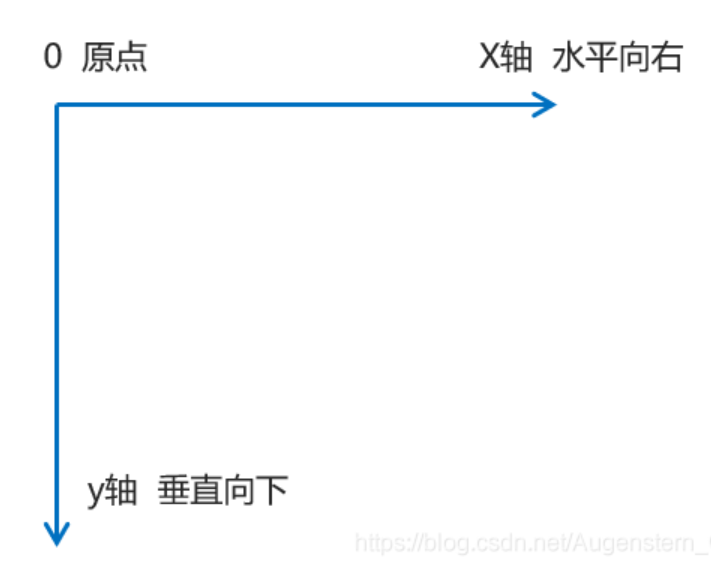

CSS 2D transform
translate 是視覺位移，不重新排版
位移後，原本的位置還在
切換位移後，第一個盒子看起來往右下移動；下方盒子仍停在原本文件流位置。
原始佔位
translate box
next box
百分比相對元素自身尺寸
同樣是 `translate(50%, 50%)`，盒子越大，實際位移距離也越大。
50%
絕對定位置中需要拉回自身一半
只有 left/top: 50%
左上角對齊中心
再加 translate(-50%, -50%)
中心點對齊中心
